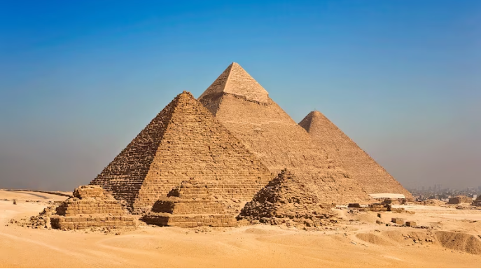

Pyramids of Giza, the oldest of the wonders and the only
one of the seven substantially in existence today.
Pyramids of Giza, Arabic Ahrāmāt Al-Jīzah, Giza also spelle
d Gizeh, three 4th-dynasty (c. 2575–c. 2465 BCE) pyramids erected
on a rocky plateau on the west bank of the Nile River near Al-Jīzah
(Giza) in northern Egypt. In ancient times they were included among
the Seven Wonders of the World. The ancient ruins of the Memphis area,
including the Pyramids of Giza, Ṣaqqārah, Dahshūr, Abū Ruwaysh, and
Abū Ṣīr, were collectively designated a UNESCO World Heritage site in 1979.
The designations of the pyramids—Khufu, Khafre, and Menkaure—correspond
to the kings for whom they were built. The northernmost and oldest pyramid
of the group was built for Khufu (Greek: Cheops), the second king of the
4th dynasty. Called the Great Pyramid, it is the largest of the three,
the length of each side at the base averaging 755.75 feet (230 metres)
and its original height being 481.4 feet (147 metres). The middle
pyramid was built for Khafre (Greek: Chephren), the fourth of the
eight kings of the 4th dynasty; the structure measures 707.75 feet
(216 metres) on each side and was originally 471 feet (143 metres) high.

The southernmost and last pyramid to be built was that of Menkaure
(Greek: Mykerinus), the fifth king of the 4th dynasty; each side measures
356.5 feet (109 metres), and the structure’s completed height was 218 feet
(66 metres). All three pyramids were plundered both internally and externally
in ancient and medieval times. Thus, the grave goods originally deposited in
the burial chambers are missing, and the pyramids no longer reach their
original heights because they have been almost entirely stripped of their
outer casings of smooth white limestone; the Great Pyramid, for example, is
now only 451.4 feet (138 metres) high. That of Khafre retains the outer
limestone casing only at its topmost portion. Constructed near each pyramid
was a mortuary temple, which was linked via a sloping causeway to a valley
temple on the edge of the Nile floodplain. Also nearby were subsidiary
pyramids used for the burials of other members of the royal family.